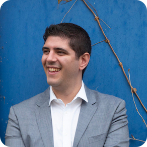
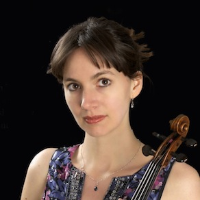
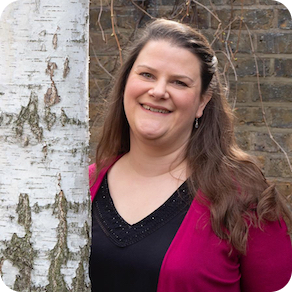

Formed in 2015, the Odysseus Piano Trio is developing a reputation as one of the most dynamic and distinctive ensmebles to emerge in recent years. Formed by well-known and distinguished musicians, the trio have performed at Kings Place, St David's Hall and regularly perform in festivals and for concert societies in the UK.
» Watch the trio in a performance of Schubert's Trio No. 1 in B-flat major, D. 898.
|  |
Robin Green“A light touch and an engaging tone” (The Strad magazine), Robin Green enjoys a busy career as a soloist, chamber musician and conductor. Robin’s CD, Dialog mit Mozart released on the Gramola label, was Editor’s Choice in the Strad Magazine. His recording Games Chorales and Fantasie released on the Claves label was reviewed by Gramophone: “Green…an intelligent and sensitive musician with a genuine flair for imaginative programming.” Robin regularly performs in festivals in the UK and abroad. Highlights include the Festspiele Mecklenburg-Vorpommern, the Interlaken Classics Festival, Davos Young Artists Festival, the International Musicians Seminar ‘Open Chamber’ Festival at Prussia Cove, the Pharos Trust, Penarth Chamber music festival and the Festival de Radio France et Montpellier. As a concerto soloist, Robin has performed with the European Union Youth Orchestra, Sinfonia Cymru, Camerata Nordica, Orchestra Sinfonica Bucuresti Orchestra Vitae and Melos Sinfonia. Chamber music forms a central part of Robin’s life as a musician. Former recipient of the Leverhulme Chamber music fellowship at the Royal College of Music, Robin was the first prize winner of the Royal Overseas League Chamber music competition, the Concours Nicati in Switzerland and runner up prize winner at the International Schubert duo competition. Robin is currently a member of the Odysseus Piano Trio. He has collaborated with Gordan Nikolitch, Valeryi Sokolov, Bogdan Bozovic, Thomas Carroll, Mei Yi Foo, Christian Elliott, Llyr Williams, Alice Neary and members London Haydn Quartet. Robin is a piano professor at the Royal Welsh College of Music and Drama. Supporting his studies at the Royal College of Music and the Mozarteum, Salzburg, Robin has participated in masterclasses with Menahem Pressler, Ivry Gitlis, Ferenc Rados, Stephen Kovacevich, Dénes Várjon, Imre Rohmann and Rainer Schmidt. He lives in Cardiff with his wife and 2 children. Read more on Robin's website. |
|  |
Sara TrickeySara Trickey enjoys an exciting and diverse career as a solo violinist and chamber musician. Noted for her “fiery and passionate” performances (The Strad) and her “beautifully refined tone” (Musical Opinion), she performs at many of the major UK festivals and venues, including in recent months the Presteigne, Alwyn, Oxford May Music, York, and Wye Valley Chamber Music festivals. She plays regularly with pianist Dan Tong with whom she has recorded the Schubert Sonatinas to critical acclaim (“Irresistible!” – Barry Millington). A CD of Fauré and David Matthews has recently been released by Deux-Elles. She also made a world premiere recording of Mathias’ violin sonatas with Iwan Llewelyn Jones. Sara has performed most of the repertoire for violin and orchestra, with orchestras that include the City of London Sinfonia and the Orchestra of St John’s (“The Beethoven violin concerto was quite simply perfection” – Seen and Heard International). She is a founder member of the Odysseus Piano Trio and the Joachim String Trio, the latter playing on gut strings. She is also currently a member of the mixed ensemble Sound Collective, and plays in a violin duo with Andrew Watkinson, leader of the Endellion Quartet. Prior to forming these groups, Sara led the Bronte String Quartet for six years, winning the Royal Overseas League competition and second prize in the Cremona International Quartet competition. Sara studied with Camilla Wicks and also was very much influenced by her studies at IMS Prussia Cove. She read Classics at Trinity Hall, Cambridge and this continues to be a passion. She also enjoys teaching, primarily at the Junior Guildhall School of Music and Drama. Read more on Sara's website. |
|  |
Rosie BissIn addition to her role of Principal cello of Welsh National Opera, Rosie enjoys a busy and varied career as chamber musician, soloist, guest principal, and teacher. As recitalist and former member of the Zehetmair quartet and trio, the European Music Project and the Scottish Ensemble, Rosie has played throughout Europe and America’s concert halls, broadcast on BBC Radio 3, Classic FM, WDR 3 and performed at major music festivals including Edinburgh, Aspen, Verbier and Schleswig-Holstein. Busy though the WNO schedule is, playing in the orchestral pit, symphony and chamber concerts, and sometimes in costume and character as part of the opera, Rosie has also guest lead the cello sections of Bournemouth Symphony, BBC National orchestras of Wales and Scotland, City of Birmingham Symphony orchestra, English National Opera and Opera North, and the Royal Northern Sinfonia. Away from the regular classical regime, Rosie has recorded albums with folk musicians Rachel Unthank and Troy Donockley and performed with the German Cabaret show “Ensemble Extravagance!” Rosie studied at Cambridge University and The Cologne Musikhochschule under Maria Kliegel. Now a keen educator, Rosie teaches cello and chamber music at the Royal Welsh College of Music & Drama, coaches for the National Children’s Orchestra, and gives masterclasses annually at Cellofest. Rosie plays on a Roman Cello, circa 1730 by Gulio Cesare Gigli, and a 1990 Welsh cello by Clive Morris. |